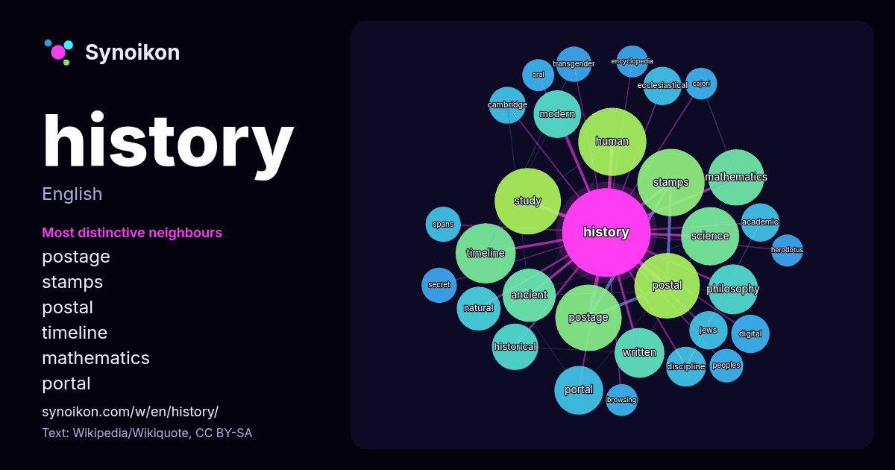

English · popular word
history
The words found around it in 1682 instances from Wikipedia, Wikiquote, Hacker News.

Most distinctive neighbours
- postage 39×
- stamps 38×
- postal 36×
- timeline 30×
- mathematics 23×
- portal 20×
- human 19×
- philosophy 17×
- ancient 16×
- ecclesiastical 13×
- discipline 13×
- study 12×
- science 11×
- historical 11×
- transgender 11×
- jews 11×
- spans 10×
- cajori 10.0×
- browsing 9.9×
- cambridge 9.9×
× = how many times more often than in general Wikipedia text.
Most frequent neighbours
- human 41
- stamps 40
- postage 39
- study 39
- american 38
- postal 38
- world 37
- book 33
- timeline 32
- science 30
- mathematics 28
- ancient 25
- period 24
- art 23
- philosophy 22
- written 22
- british 21
- portal 21
- development 20
- modern 20
In context
- History is the systematic study of the past, focusing primarily on the human past. As an academic discipline, it analyses and interprets evidence to construct Wikipedia snippets · History
- HIStory: Past, Present and Future, Book I, often referred to simply as HIStory, is a double album by the American singer and songwriter Michael Jackson Wikipedia snippets · HIStory: Past, Present and Future, Book I
- Arsenal has won the second-most top-flight matches in English football history. In the 1930s, Arsenal won five League Championships and two FA Cups, with Wikipedia snippets · Arsenal F.C.
- considered the most important in surveys where authoritative sources review the history of the medium not limited by time period, region, genre, topic, or other Wikipedia snippets · List of photographs considered the most important
- Ancient history is a time period from the beginning of writing and recorded human history through late antiquity. The span of recorded history is roughly Wikipedia snippets · Ancient history
- flourished during the 8th-10th centuries CE. Kannada has an unbroken literary history of around 1500 years. In July 2011, a centre for the study of classical Wikipedia snippets · Kannada
- up History or history in . History is the study of the past. History may also refer to: History of Earth Human history History Wikipedia snippets · History (disambiguation)
- focus on a particular theme, such as the arts, science, natural history, or local history. Museums that host exhibitions and interactive demonstrations Wikipedia snippets · Museum
More words
- art
- autumn
- bell
- bread
- bridge
- cat
- city
- climate
- clock
- death
- desert
- dog
- family
- food
- forest
- garden
- god
- gold
- health
- heart
- honey
- horse
- island
- language
- life
- map
- mirror
- money
- mother
- mountain
- nature
- power
- rain
- road
- salt
- science
- shadow
- silence
- song
- star
- storm
- summer
- tea
- time
- train
- truth
- water
- winter
- work
Precomputed on 2026-10-09 with default settings (±5 words, medium corpus). The interactive map can refresh it with live data.